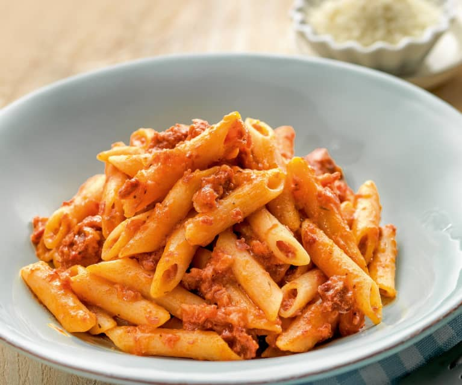

Paste

Description
Aici avem niste paste smechere si mi-e o pofta de mor.
Ingredinte:
- Paste
- Sos de tomate
- Apa
- Sare
- Ulei
Pasi:
- Se pune apa pe foc.
- Se adauga o lingura de ulei.
- Se adauga sare dupa gust.
- Cand incepe apa sa fiarba se adauga pastele.
- Dupa 10 minute se scurge apa si se adauga sos de tomat peste paste